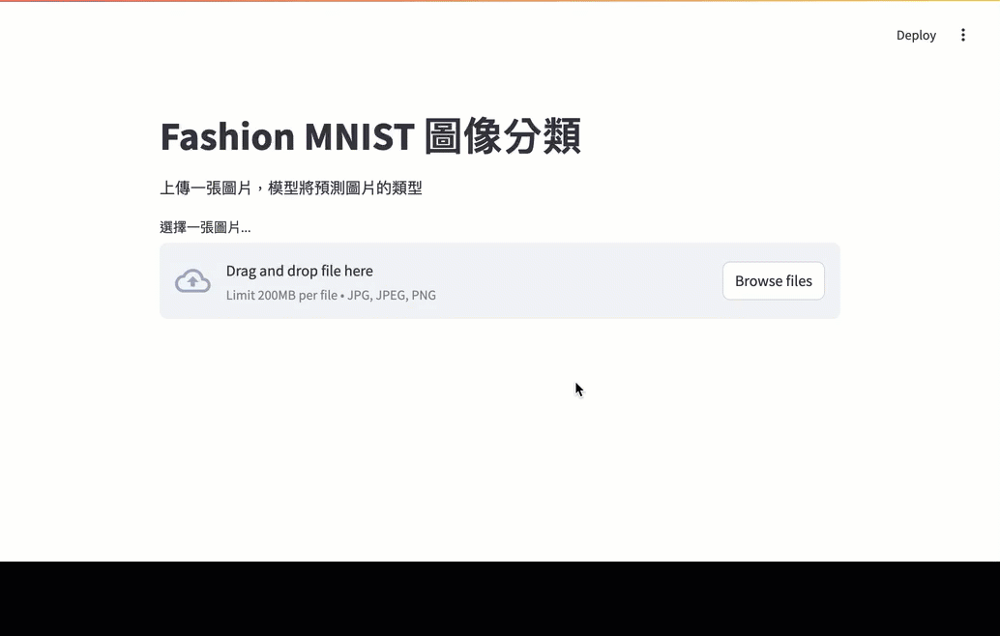

佈署模型
Table of Contents

1. 模型訓練完了，然後呢？
你花了好幾個小時訓練出一個 AI 模型，準確率高達 95%——恭喜！但問題來了：*這個模型目前只存在於你的電腦裡*。
想像你是一位大廚，花了一整天研發出完美的秘密醬汁配方。配方寫在你的筆記本裡，但如果沒有開一家餐廳，其他人永遠吃不到你的料理。
模型訓練 = 研發配方（在廚房裡實驗）
模型部署 = 開餐廳營業（讓顧客能點餐吃到）
1.1. 什麼是模型部署？
模型部署（Model Deployment）就是把訓練好的模型包裝成一個*別人可以使用的服務*。通常的做法是建立一個網頁介面，讓使用者可以：
- 上傳資料（例如一張圖片）
- 模型在背後進行預測
- 把結果顯示在網頁上
1.2. 部署的完整流程
訓練模型 → 儲存模型 → 建立網頁介面 → 連接模型與介面 → 上線服務
| 步驟 | 做什麼 | 用什麼工具 |
|---|---|---|
| 訓練模型 | 用資料訓練神經網路 | TensorFlow / Keras |
| 儲存模型 | 把訓練好的權重存成檔案 | model.save() |
| 建立介面 | 做一個讓人操作的網頁 | Streamlit |
| 連接模型 | 載入模型並處理使用者的輸入 | Python |
| 上線服務 | 讓別人能連上你的網頁 | localhost / 雲端 |
2. Streamlit：三行程式碼做出網頁

Figure 1: Streamlit 官方首頁
Streamlit 是一個 Python 框架，專門用來*用最少的程式碼做出互動式網頁*。
它有多簡單？看看這個：
1: import streamlit as st 2: 3: st.title("我的第一個 AI 網頁") 4: st.write("Hello World!")
就這樣，三行程式碼，你就有一個網頁了。執行方式不是 =python main.py=，而是：
streamlit run main.py
瀏覽器會自動打開 =http://localhost:8501=，你的網頁就在那裡。
2.1. Streamlit 的優點
| 優點 | 說明 |
|---|---|
| 超級簡單 | 不需要學 HTML/CSS/JavaScript，純 Python 就能做網頁 |
| 即時預覽 | 修改程式碼後儲存，網頁自動更新 |
| 元件豐富 | 按鈕、滑桿、下拉選單、檔案上傳⋯⋯通通內建 |
| 支援 AI 框架 | 可以直接整合 TensorFlow、PyTorch、scikit-learn |
| 免費部署 | 可以用 Streamlit Cloud 免費上線 |
2.2. Streamlit 常用元件
1: import streamlit as st 2: 3: # 標題與文字 4: st.title("大標題") 5: st.header("中標題") 6: st.write("一般文字，支援 **Markdown**") 7: 8: # 互動元件 9: name = st.text_input("你叫什麼名字？") 10: age = st.slider("你幾歲？", 0, 100, 16) 11: agree = st.checkbox("我同意使用條款") 12: option = st.selectbox("選擇你的班級", ["一年一班", "一年二班", "一年三班"]) 13: 14: # 顯示結果 15: if name: 16: st.write(f"哈囉 {name}！你 {age} 歲，來自 {option}") 17: 18: # 檔案上傳 19: uploaded = st.file_uploader("上傳圖片", type=["jpg", "png"]) 20: if uploaded: 21: st.image(uploaded, caption="你上傳的圖片")
存成 demo.py 後執行 streamlit run demo.py 就能看到效果。
3. 實戰：部署 Fashion MNIST 分類器
接下來我們要做一個完整的專案：訓練一個能辨識衣服種類的模型，然後部署成網頁讓使用者上傳圖片來辨識。
3.1. 步驟一：訓練並儲存模型
先在 Python 中訓練模型並存檔。這段程式碼可以在 Jupyter Notebook 或 org-mode 中執行：
1: import tensorflow as tf 2: from tensorflow import keras 3: from keras import layers 4: import numpy as np 5: 6: # 1. 載入 Fashion MNIST 資料集 7: (x_train, y_train), (x_test, y_test) = keras.datasets.fashion_mnist.load_data() 8: 9: # 2. 資料預處理 10: x_train = x_train.reshape(-1, 28, 28, 1).astype("float32") / 255.0 11: x_test = x_test.reshape(-1, 28, 28, 1).astype("float32") / 255.0 12: 13: # 3. 建立模型（Keras 3.x 寫法） 14: inputs = layers.Input(shape=(28, 28, 1)) 15: x = layers.Conv2D(32, kernel_size=3, activation="relu")(inputs) 16: x = layers.MaxPooling2D(pool_size=2)(x) 17: x = layers.Conv2D(64, kernel_size=3, activation="relu")(x) 18: x = layers.MaxPooling2D(pool_size=2)(x) 19: x = layers.Flatten()(x) 20: x = layers.Dense(128, activation="relu")(x) 21: outputs = layers.Dense(10, activation="softmax")(x) 22: model = keras.Model(inputs, outputs) 23: 24: model.compile( 25: optimizer="adam", 26: loss="sparse_categorical_crossentropy", 27: metrics=["accuracy"] 28: ) 29: 30: print("模型架構：") 31: model.summary()
1: # 4. 訓練模型 2: history = model.fit(x_train, y_train, epochs=5, batch_size=64, 3: validation_split=0.1, verbose=1) 4: 5: # 5. 評估模型 6: test_loss, test_acc = model.evaluate(x_test, y_test, verbose=0) 7: print(f"\n測試準確率：{test_acc:.4f}")
1: # 6. 儲存模型 2: model.save("fashion_mnist_model.keras") 3: print("模型已儲存為 fashion_mnist_model.keras") 4: 5: # 驗證模型可以被載入 6: loaded_model = keras.models.load_model("fashion_mnist_model.keras") 7: test_loss, test_acc = loaded_model.evaluate(x_test, y_test, verbose=0) 8: print(f"載入後的測試準確率：{test_acc:.4f}（應該跟上面一樣）")
3.2. 步驟二：視覺化訓練結果
1: import matplotlib.pyplot as plt 2: import matplotlib 3: matplotlib.rc('font', family='Arial Unicode MS') 4: 5: fig, (ax1, ax2) = plt.subplots(1, 2, figsize=(12, 4)) 6: 7: # 準確率 8: epochs = range(1, len(history.history['accuracy']) + 1) 9: ax1.plot(epochs, history.history['accuracy'], 'bo-', label='訓練') 10: ax1.plot(epochs, history.history['val_accuracy'], 'ro-', label='驗證') 11: ax1.set_title('準確率') 12: ax1.set_xlabel('Epoch') 13: ax1.set_ylabel('Accuracy') 14: ax1.legend() 15: 16: # 損失值 17: ax2.plot(epochs, history.history['loss'], 'bo-', label='訓練') 18: ax2.plot(epochs, history.history['val_loss'], 'ro-', label='驗證') 19: ax2.set_title('損失值') 20: ax2.set_xlabel('Epoch') 21: ax2.set_ylabel('Loss') 22: ax2.legend() 23: 24: plt.tight_layout() 25: plt.savefig("images/deploy-training-history.png", dpi=150, bbox_inches='tight') 26: plt.close() 27: print("訓練歷程圖已儲存")

Figure 2: Fashion MNIST 訓練歷程
3.3. 步驟三：測試模型預測效果
1: # 類別標籤 2: class_labels = [ 3: 'T-shirt/top', 'Trouser', 'Pullover', 'Dress', 'Coat', 4: 'Sandal', 'Shirt', 'Sneaker', 'Bag', 'Ankle boot' 5: ] 6: 7: # 隨機挑幾張測試圖片來預測 8: fig, axes = plt.subplots(2, 5, figsize=(14, 6)) 9: indices = np.random.choice(len(x_test), 10, replace=False) 10: 11: for i, idx in enumerate(indices): 12: ax = axes[i // 5][i % 5] 13: ax.imshow(x_test[idx].reshape(28, 28), cmap='gray') 14: 15: pred = loaded_model.predict(x_test[idx:idx+1], verbose=0) 16: pred_label = class_labels[np.argmax(pred)] 17: true_label = class_labels[y_test[idx]] 18: 19: color = 'green' if pred_label == true_label else 'red' 20: ax.set_title(f"預測: {pred_label}\n實際: {true_label}", 21: fontsize=9, color=color) 22: ax.axis('off') 23: 24: plt.suptitle('模型預測結果（綠色=正確，紅色=錯誤）', fontsize=13) 25: plt.tight_layout() 26: plt.savefig("images/deploy-prediction-samples.png", dpi=150, bbox_inches='tight') 27: plt.close() 28: print("預測結果圖已儲存")

Figure 3: 模型預測結果範例
3.4. 步驟四：建立 Streamlit 網頁應用
現在模型訓練好了，我們來寫 Streamlit 應用程式。將以下程式碼存成 =app.py=：
1: # 檔案名稱：app.py 2: # 執行方式：streamlit run app.py 3: import tensorflow as tf 4: from tensorflow import keras 5: import streamlit as st 6: from PIL import Image, ImageOps 7: import numpy as np 8: 9: # 類別標籤 10: class_labels = [ 11: 'T-shirt/top', 'Trouser', 'Pullover', 'Dress', 'Coat', 12: 'Sandal', 'Shirt', 'Sneaker', 'Bag', 'Ankle boot' 13: ] 14: 15: # 載入已訓練好的模型（步驟一儲存的檔案） 16: @st.cache_resource # 快取模型，避免每次重新載入 17: def load_model(): 18: return keras.models.load_model("fashion_mnist_model.keras") 19: 20: model = load_model() 21: 22: # === 網頁介面 === 23: st.title("Fashion MNIST 圖像分類器") 24: st.write("上傳一張衣服、鞋子或包包的圖片，AI 會告訴你它是什麼！") 25: 26: # 檔案上傳元件 27: uploaded_file = st.file_uploader("選擇一張圖片", type=["jpg", "jpeg", "png"]) 28: 29: if uploaded_file is not None: 30: # 顯示原始圖片 31: image = Image.open(uploaded_file) 32: st.image(image, caption="你上傳的圖片", width=300) 33: 34: # === 圖片預處理 === 35: # Fashion MNIST 的輸入格式：28x28 灰階圖片，像素值 0~1 36: gray_image = ImageOps.grayscale(image) # 轉灰階 37: resized = gray_image.resize((28, 28)) # 縮放到 28x28 38: img_array = np.array(resized) / 255.0 # 正規化 39: img_array = img_array.reshape(1, 28, 28, 1) # 調整形狀 40: 41: # 顯示處理後的圖片 42: col1, col2 = st.columns(2) 43: with col1: 44: st.image(gray_image, caption="灰階圖片", width=200) 45: with col2: 46: st.image(resized, caption="縮放至 28x28", width=200) 47: 48: # === 預測 === 49: predictions = model.predict(img_array) 50: predicted_class = np.argmax(predictions) 51: confidence = predictions[0][predicted_class] * 100 52: 53: # 顯示結果 54: st.success(f"預測結果：**{class_labels[predicted_class]}**（信心度 {confidence:.1f}%）") 55: 56: # 顯示所有類別的機率 57: st.bar_chart( 58: data=dict(zip(class_labels, predictions[0])), 59: )
3.5. 步驟五：執行與測試
在終端機中執行：
# 1. 確保模型檔案 fashion_mnist_model.keras 和 app.py 在同一個資料夾 # 2. 安裝必要套件 pip install streamlit tensorflow pillow numpy # 3. 啟動應用 streamlit run app.py
瀏覽器會自動開啟 =http://localhost:8501=，你就能上傳圖片來測試了！

Figure 4: Fashion MNIST 分類器部署成果
4. 部署到雲端：讓全世界都能用
目前我們的應用只跑在自己的電腦上（localhost），只有你自己能用。如果想讓別人也能連上，有幾種做法：
4.1. Streamlit Cloud（最簡單）
Streamlit 官方提供免費的雲端部署服務：
- 把程式碼推到 GitHub
- 到 share.streamlit.io 登入
- 選擇你的 GitHub repo，點「Deploy」
- 完成！你會得到一個公開的網址
需要在 GitHub repo 中準備：
your-repo/ ├── app.py # Streamlit 主程式 ├── fashion_mnist_model.keras # 模型檔案 └── requirements.txt # 套件清單
requirements.txt 的內容：
streamlit tensorflow pillow numpy
4.2. 其他部署選項
| 平台 | 難度 | 費用 | 特色 |
|---|---|---|---|
| Streamlit Cloud | 低 | 免費 | 專為 Streamlit 設計，最簡單 |
| Hugging Face | 低 | 免費 | AI 社群平台，適合展示模型 |
| Render | 中 | 免費方案 | 支援多種框架 |
| Google Cloud | 高 | 付費 | 企業級，適合正式服務 |
| AWS | 高 | 付費 | 最完整的雲端服務 |
4.3. Gradio：另一個好選擇
除了 Streamlit，Gradio 也是很受歡迎的 AI 部署框架，語法更簡潔：
1: # 用 Gradio 部署同一個模型（存成 gradio_app.py） 2: import gradio as gr 3: import tensorflow as tf 4: from tensorflow import keras 5: from PIL import ImageOps 6: import numpy as np 7: 8: model = keras.models.load_model("fashion_mnist_model.keras") 9: class_labels = [ 10: 'T-shirt/top', 'Trouser', 'Pullover', 'Dress', 'Coat', 11: 'Sandal', 'Shirt', 'Sneaker', 'Bag', 'Ankle boot' 12: ] 13: 14: def predict(image): 15: gray = ImageOps.grayscale(image) 16: resized = gray.resize((28, 28)) 17: img_array = np.array(resized).reshape(1, 28, 28, 1) / 255.0 18: pred = model.predict(img_array)[0] 19: return {class_labels[i]: float(pred[i]) for i in range(10)} 20: 21: demo = gr.Interface( 22: fn=predict, 23: inputs=gr.Image(type="pil"), 24: outputs=gr.Label(num_top_classes=5), 25: title="Fashion MNIST 分類器", 26: description="上傳衣服/鞋子/包包的圖片，AI 會辨識它是什麼", 27: ) 28: demo.launch()
Streamlit vs Gradio：
| 比較 | Streamlit | Gradio |
|---|---|---|
| 適合場景 | 完整的資料儀表板 | 快速展示 AI 模型 |
| 程式碼量 | 較多，但彈性高 | 極少，幾行搞定 |
| 外觀客製化 | 高 | 中 |
| 部署平台 | Streamlit Cloud | Hugging Face Spaces |
5. 小結
| 概念 | 說明 |
|---|---|
| 模型部署 | 把訓練好的模型包裝成別人可以使用的服務 |
| Streamlit | Python 框架，用最少程式碼做出互動式網頁 |
| 模型儲存 | model.save() 把權重存成檔案 |
| 模型載入 | keras.models.load_model() 讀回模型 |
| 圖片預處理 | 灰階 → 縮放 → 正規化 → 調整形狀 |
| 雲端部署 | 讓全世界都能連上你的 AI 服務 |
| Gradio | 另一個 AI 部署框架，語法更簡潔 |
部署是 AI 開發的「最後一哩路」。再厲害的模型，如果只躺在你的電腦裡，就像一道沒人吃過的菜——有了部署，你的 AI 才真正有用。
6. 作業
6.1. 作業一：我的 AI 小網站
請完成以下步驟，將 Fashion MNIST 分類器部署到你自己的電腦上：
- 執行步驟一的訓練程式，儲存模型為
fashion_mnist_model.keras - 將步驟四的程式碼存成
app.py - 在終端機執行
streamlit run app.py - 從網路上找 3 張不同類別的衣物圖片，上傳測試
你的任務：
- 截圖 3 次預測結果（包含上傳的圖片和預測結果）
- 記錄每次的預測類別和信心度
- 有沒有預測錯誤的情況？如果有，猜猜看為什麼
預期輸出格式：
測試 1： 上傳圖片：一件白色 T-shirt 預測結果：T-shirt/top（信心度 92.3%） 判斷：正確 測試 2： 上傳圖片：一雙運動鞋 預測結果：Sneaker（信心度 87.1%） 判斷：正確 測試 3： 上傳圖片：一件格子襯衫 預測結果：Shirt（信心度 45.2%）/ Coat（信心度 30.1%） 判斷：正確，但信心度不高，可能因為格子花紋讓模型混淆 分析：真實照片比 Fashion MNIST 的訓練圖片複雜很多（有背景、有顏色、 解析度不同），所以模型的信心度可能不如在測試集上那麼高。
6.2. 作業二：Streamlit 元件大亂鬥
用 Streamlit 做一個「AI 模型設定面板」，讓使用者可以透過網頁介面調整參數。
起始程式碼（存成 =panel.py=，執行 =streamlit run panel.py=）：
1: import streamlit as st 2: 3: st.title("AI 模型設定面板") 4: 5: # 範例：用滑桿調整 epochs 6: epochs = st.slider("訓練輪數 (Epochs)", min_value=1, max_value=50, value=10) 7: st.write(f"你選擇了 {epochs} 個 epochs")
你的任務：
在這個面板中加入以下元件（至少完成 4 個）：
- 用
st.selectbox讓使用者選擇優化器（Adam / SGD / RMSprop） - 用
st.slider讓使用者調整 learning rate（0.0001 ~ 0.1） - 用
st.number_input讓使用者輸入 batch size（16 / 32 / 64 / 128） - 用
st.radio讓使用者選擇模型架構（簡單 CNN / 深層 CNN / MLP） - 用
st.checkbox讓使用者決定是否使用 Data Augmentation - 加入一個 =st.button(“開始訓練”)=，按下後顯示所有設定的摘要
預期成果： 一個網頁面板，使用者可以調整各種參數，按下按鈕後看到設定摘要。
預期輸出（按下按鈕後）：
=== 訓練設定摘要 === - 訓練輪數：10 - 優化器：Adam - Learning Rate：0.001 - Batch Size：32 - 模型架構：簡單 CNN - Data Augmentation：否
6.3. 作業三：AI 產品企劃書
假設你要用 AI 做一個產品，請寫一份簡短的企劃書。
背景： 你的學校想要一個 AI 系統來解決某個問題（自行選擇），例如：
- 自動辨識營養午餐的菜色並計算熱量
- 辨識校園植物種類
- 預測段考成績（根據平時成績和出席率）
- 自動分類學生的心情（從週記文字分析）
- 其他你想到的任何點子
企劃書格式：
=== AI 產品企劃書 === 1. 產品名稱：[取一個帥氣的名字] 2. 要解決的問題： [描述這個問題，為什麼需要 AI 來解決？] 3. 使用的 AI 技術： - 模型類型：[CNN / RNN / 分類器 / 其他] - 訓練資料來源：[從哪裡取得資料？需要多少資料？] - 預期準確率：[你覺得合理的準確率是多少？] 4. 部署方式： - 使用者介面：[Streamlit / Gradio / LINE Bot / 手機 App] - 部署平台：[本機 / Streamlit Cloud / Hugging Face / 其他] - 使用者如何操作：[描述使用流程] 5. 可能遇到的困難： [至少列出 2 個挑戰，例如資料不足、模型不準、隱私問題等] 6. 為什麼這個產品很酷： [用一句話說服校長買單]